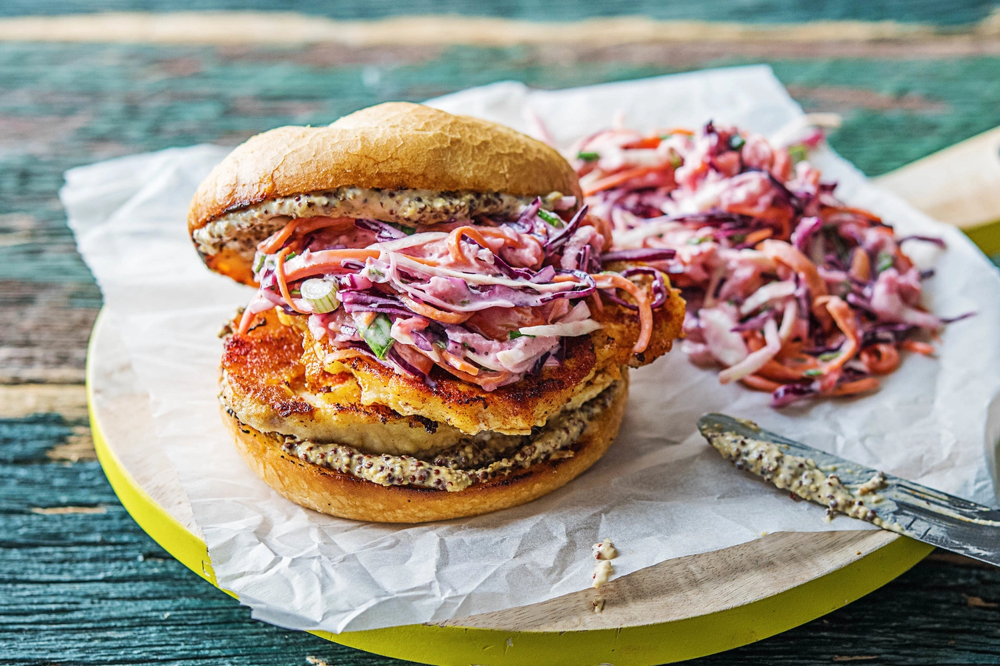

Landmarks

The CN Tower is Toronto's most iconic landmark and a masterpiece of modern engineering. For over 30 years, it held the record as the world's tallest free-standing structure, offering unparalleled views of the city and Lake Ontario. Whether you're brave enough for the EdgeWalk, dining at the revolving 360 Restaurant, or simply standing on the famous Glass Floor, it remains the ultimate "must-see" for any visitor to the 6ix.
Culinary Delights

The Peameal Bacon Sandwich is Toronto's most legendary contribution to the culinary world. Unlike traditional smoked bacon, peameal bacon is made from lean, boneless pork loin that is wet-cured and rolled in cornmeal (originally ground yellow peas, hence the name). While it's a staple across Ontario, the sandwich became a global icon at St. Lawrence Market, specifically at Carousel Bakery. Served simply—piled high on a soft bun and traditionally topped with a squeeze of honey mustard—it has been praised by culinary legends like Anthony Bourdain and remains the essential "taste of Toronto" for any visiting foodie.